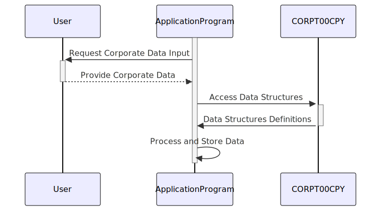

Gerado em: 1 de outubro de 2024
Título do Documento: Especificação da Estrutura de Dados Corporativos
Descrição Resumida:
Este documento descreve a estrutura e o propósito do copybook COBOL CORPT00.CPY, que define as estruturas de dados usadas para gerenciar e exibir informações corporativas dentro de uma aplicação maior. Este copybook provavelmente suporta a geração de relatórios ou a apresentação de dados relacionados a operações corporativas, abrangendo aspectos como detalhes de transações, títulos de relatórios, datas, períodos e possíveis mensagens de erro.
Histórias do Usuário:
Como administrador do sistema, preciso de uma maneira padronizada de lidar com dados corporativos em diferentes programas para que a geração de relatórios e o gerenciamento de dados permaneçam consistentes e confiáveis.
Epic Relacionado:
5 - Relatórios e Análise
Requisitos Funcionais:
- Definição da Estrutura de Dados:
- Definir duas estruturas de dados,
CORPT0AI e CORPT0AO, para armazenar informações corporativas.
CORPT0AI deve armazenar dados em um formato adequado para entrada do usuário, provavelmente baseado em caracteres.CORPT0AO deve espelhar CORPT0AI, mas potencialmente representar dados em um formato mais adequado para processamento interno ou saída.
- Definições de Campo:
- Incluir campos para nome da transação (
TRNNAMEx), títulos de relatório (TITLE01x, TITLE02x), data e hora atuais (CURDATEx, CURTIMEx), indicadores de período (MONTHLYx, YEARLYx, CUSTOMx), datas de início e término (SDTMMx, SDTDDx, SDTYYYx, EDTMMx, EDTDDx, EDTYYYx), um indicador de confirmação (CONFIRMx) e um campo de mensagem de erro (ERRMSGx).
- Aplicação de Tipo de Dados e Formato:
- Garantir que os tipos de dados e formatos sejam consistentes com o uso pretendido de cada campo (por exemplo, alfanumérico para títulos, numérico para datas, indicadores de caractere único para campos sim/não).
Requisitos Não Funcionais:
- Reutilização: O copybook deve ser projetado para ser incluído em vários programas para garantir a consistência no tratamento de dados corporativos.
- Manutenibilidade: O código deve ser bem comentado e estruturado para facilitar a manutenção e as atualizações.
Critérios de Aceitação:
- As estruturas de dados definidas em
CORPT00.CPY devem ser compiladas e usadas com sucesso por programas COBOL sem erros.
- Os dados armazenados nessas estruturas devem ser interpretados e usados corretamente pela aplicação para geração de relatórios ou outras tarefas de processamento de dados corporativos.
- O copybook deve ser bem documentado para garantir clareza para os desenvolvedores que o utilizam.
Melhorias de Código:
- Considere adicionar regras de validação de dados diretamente no copybook: Por exemplo, você pode usar os níveis
88 do COBOL para definir valores válidos para indicadores como MONTHLYx, YEARLYx e CONFIRMx, aprimorando a integridade dos dados.
- Implemente nomes de campo mais descritivos: Embora os nomes atuais transmitam o propósito básico, usar nomes mais detalhados (por exemplo,
TRANSACTION_NAME, REPORT_TITLE_1, START_DATE_MONTH) melhoraria a legibilidade do código.
Melhorias de Segurança:
- Sem dados confidenciais: O copybook em si não parece lidar com dados confidenciais, como senhas ou informações financeiras. No entanto, ao usar este copybook em aplicações que processam dados confidenciais, certifique-se de que medidas de segurança adequadas estejam em vigor, como criptografia de dados e mecanismos de controle de acesso.
Diagrama Conceitual:

–Made by “Smart Engineering” (by Compass.UOL)–